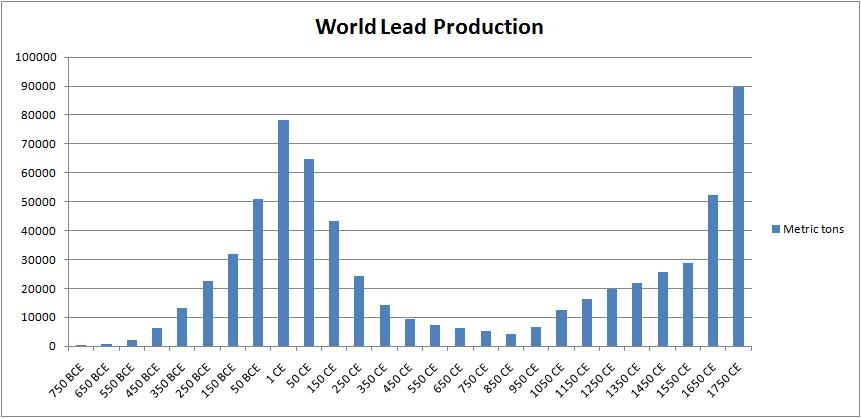

Roma rappresenta una quota di rilievo dell’economia nazionale (quasi il 10%) in cui il settore terziario risulta dominante (87% del totale, un valore che supera di quasi 15 punti il dato medio italiano).
Tuttavia, nonostante prevalgono le attività terziarie, sia private che pubbliche, caratterizzate in larga parte da bassa produttività e limitato grado di innovazione, Roma presenta un notevole livello di specializzazione in diversi settori manifatturieri (in particolare, nell’aerospazio, nel chimico-farmaceutico, nelle industrie del petrolio e degli armamenti, nell’industria energetica, nell’elettronica e nei computer) e in alcuni settori del terziario (trasporto aereo, telecomunicazioni, industrie culturali) ove è forte la presenza di grandi imprese (quali ad esempio Alitalia, Telecom-Tim, Enel, Acea, Rai, Poste italiane…). Forte specializzazione caratterizza anche i servizi alle imprese, le attività museali, l’intermediazione finanziaria e la compravendita di immobili e persino nel settore pubblico sono presenti importanti competenze (istruzione universitaria e di ricerca scientifica, conservazione e gestione del patrimonio culturale).
